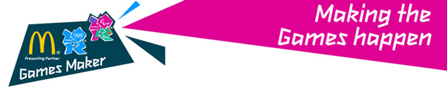
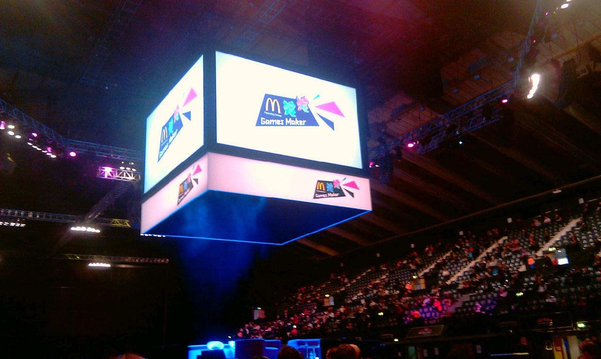

Games Maker Orientation

Games Maker Orientation training 18 February 2012
Dear Catherine Mudford,
We are looking forward to seeing you soon for Games Maker Orientation training at Wembley Arena!
Event - Wembley Arena Saturday 18th Feb 2012 Doors Open 08:30 AM Training will start 90 minutes after doors open Event Finishes Approx. 12:45
Seat - Entrance South East Block C4 Row 14 Seat 57
How do I get to Wembley Arena? - The full address is: Wembley Arena, Engineers Way, London, HA9 OAA, UK.
What do I do when I get there? - Go to the South East Entrance and have the barcode above ready to be scanned at the gate (either on a print
out or on your phone).
What do I need to bring? - Please remember to bring photo ID - a passport or photocard driving licence - as you'll need them to get into the
event! (If you're a UK resident you can bring a long-form birth certificate instead along with a recent proof of address - like a utility bill
or bank statement dated within the last three months).
For security reasons you will not be able to store bags at the venue, so we recommend you travel as light as possible. There will be a 30-minute
break during training and refreshments will be available to purchase inside the venue. Please bring cash as there are no cash machines at the
venue and you won’t be able to pay by card.

Best wishes,
The London 2012 Games Maker team
I stayed down in London at a Premier Inn within walkining distance of Wembley Arena. Having wandered down to the Arena, found that Sods Law
meant my entrance was the furtherest one away. A long queue already in place 30 minutes before the doors opened which was two hours before the
scheduled start. Once my passport and invite were checked, I eventually found my seat on the floor of the arena not far from the central podium.
A woman to my left was going to be a hostess to a team in the village. She immediately got out a book and ignored me! A guy to the right was
going to be part of the medal ceremony process at both Olympics and Paralympics. He had come up overnight from Cornwall. The lass on his other
side was going to be on the Mall for the Cycle road races trying to coral the press.
John Inverdale was the MC for the event. John Regis was one of the special guests. We got a preview of the uniform and a whole lot of
"motivational stuff" that the younger volunters loved and the older ones like me just about tolerated. It reminded me very much of the MEN
event in 2002 re Manchester Commonwealth Games.